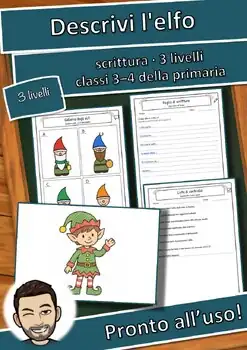

Laboratorio dei personaggi: Picasso – Pacchetto Plus: testi, quiz e attività
Il pacchetto completo su Picasso per le classi terza e quarta della primaria: testi di lettura su tre livelli, scheda, linea del tempo da incollare, testo da completare, foglio del lessico, 12 carte quiz, attività pratica, scaletta per l'esposizione orale, verifica «So fare» e soluzioni dettagliate. Con informazioni per l'insegnante e istruzioni precise per la preparazione.
Uso in classe: il materiale è adatto al lavoro autonomo, alle ore di supplenza e alle giornate di progetto. La preparazione è descritta con precisione (quantità, pagine, colore, plastificazione, ritaglio, tempo). Tutte le immagini sono disegni originali, senza fotografie e senza ritratti.
Testi creati con l'aiuto dell'IA e controllati da me. Le immagini sono disegni originali creati con l'aiuto dell'IA; i personaggi sono disegnati liberamente e non sono fotografie.
Contenuto (19 pagine): Informazioni per l'insegnante · Testo di lettura ★ · Testo di lettura ★★ · Testo di lettura ★★★ · La mia scheda · Linea del tempo da incollare · Testo da completare · Domande sul testo · Vero o falso? Rifletti · Parole e significati · Carte quiz · Metti in pratica · La mia breve esposizione · So fare …
#scuolaprimaria #biografia #classeterza #classequarta #didattica
⭐ Did this resource work well in your classroom? Please leave a quick review on TPT – you earn TPT credits for future purchases, and it helps me a lot! Click "Follow" on my store page to be the first to hear about new freebies.
U.S. STANDARDS (alignment):
- VA:Cr1.1.3a; VA:Cr2.1.3a; VA:Re7.1.3a; VA:Cr1.1.4a; VA:Cr2.1.4a; VA:Re7.1.4a; ACTFL World-Readiness Standards: Interpretive Communication; ACTFL Cultures (Relating Cultural Practices/Products to Perspectives); ACTFL Connections (Acquiring Information and Diverse Perspectives)
- Frameworks: National Core Arts Standards (Visual Arts); ACTFL World-Readiness Standards for Learning Languages
- Also supports the state standards of non-CCSS states, e.g. Texas TEKS (Languages Other Than English, §114); Florida World Languages Standards; Virginia World Language SOL; Indiana World Language Standards; Oklahoma World Languages Standards; Georgia GSE Modern Languages; Texas TEKS (Social Studies, §113); Florida NGSSS (Social Studies); Virginia History and Social Science SOL; Indiana Academic Standards for Social Studies; Oklahoma Academic Standards for Social Studies; Georgia GSE Social Studies; New York K-12 Soc
Materiali simili

Laboratorio dei personaggi: Picasso – Scheda da leggere e completare (GRATIS)

Laboratorio dei personaggi: Zeus – Scheda da leggere e completare (GRATIS)

Laboratorio dei personaggi: Rosa Parks – Scheda da leggere e completare (GRATIS)

Laboratorio dei personaggi: Zeus – Pacchetto Plus: testi, quiz e attività
